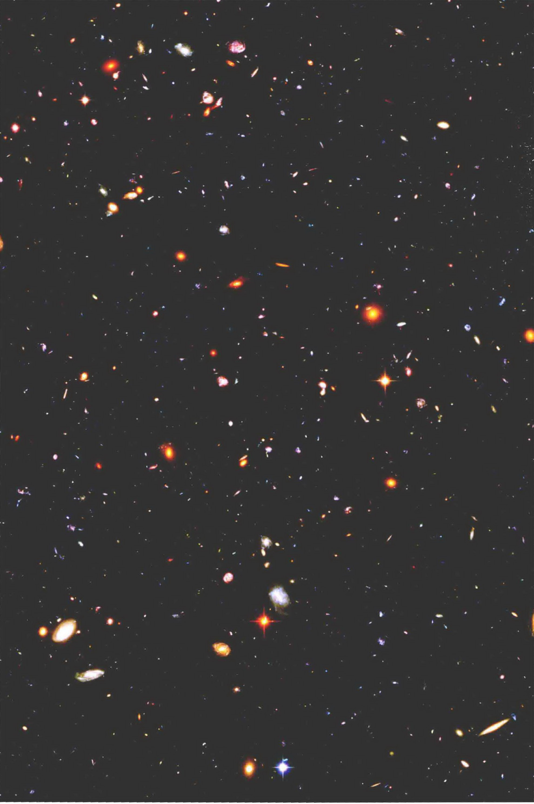
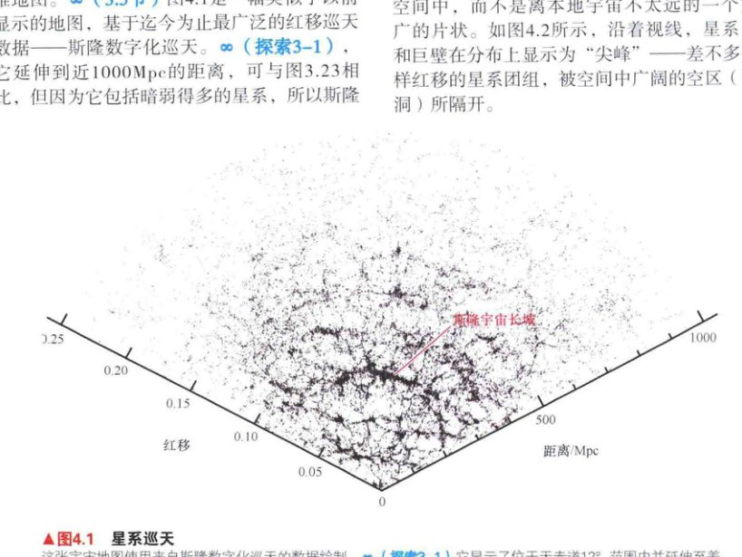
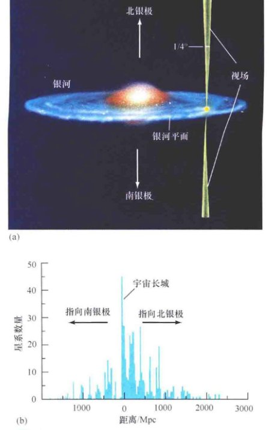
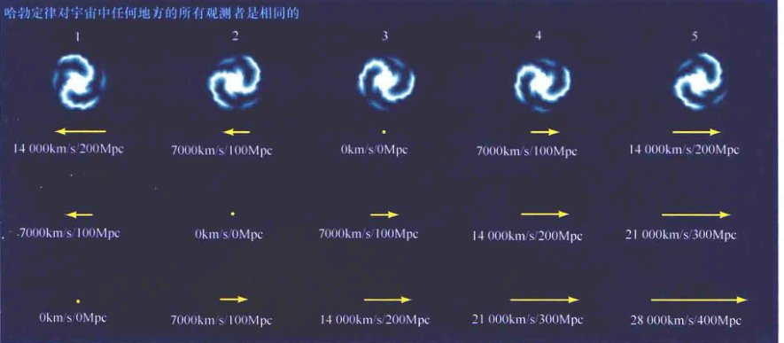
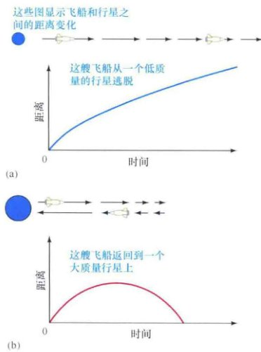
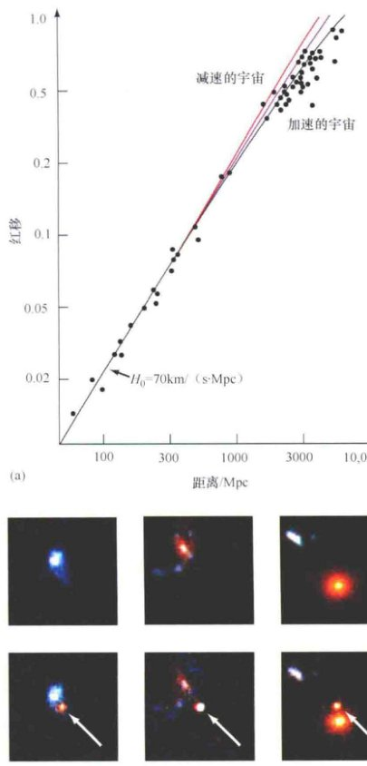
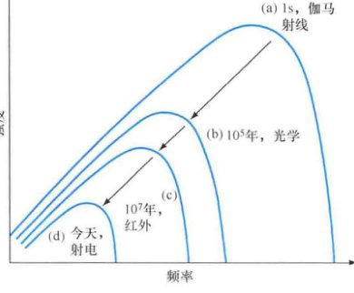

<style>
    /* 基础样式：沉浸式阅读体验 */
    body { 
        font-family: -apple-system, BlinkMacSystemFont, "Segoe UI", Roboto, "Helvetica Neue", Arial, sans-serif; 
        line-height: 1.8; 
        color: #333;
        max-width: 800px; 
        margin: 0 auto; 
        padding: 40px 20px; 
        background-color: #fff;
    }

    /* 章节单元 */
    .chapter-unit { margin-bottom: 60px; }

    /* 标题体系 */
    h1 { font-size: 2.5em; color: #2c3e50; border-bottom: 3px solid #3498db; padding-bottom: 15px; margin-top: 0; margin-bottom: 30px; }
    h2 { font-size: 1.8em; color: #34495e; margin-top: 50px; border-left: 5px solid #3498db; padding-left: 15px; }
    h3 { font-size: 1.4em; color: #2980b9; margin-top: 35px; font-weight: 600; }
    h4 { font-size: 1.2em; color: #50616d; margin-top: 25px; font-weight: bold; }
    
    /* 正文 */
    p { margin-bottom: 1.5em; text-align: justify; text-justify: inter-ideograph; }
    strong { color: #2c3e50; font-weight: 700; }

    /* 特殊区域 */
    .sidebar { 
        background: #f7f9fb; 
        padding: 25px; 
        border-left: 5px solid #3498db; 
        margin: 30px 0; 
        border-radius: 0 8px 8px 0; 
        box-shadow: 2px 2px 10px rgba(0,0,0,0.05);
    }
    .sidebar-title { font-weight: bold; color: #3498db; font-size: 1.1em; margin-bottom: 10px; display: block; }

    .concept-check {
        background-color: #e8f6f3;
        border: 1px solid #d1f2eb;
        padding: 15px;
        margin: 20px 0;
        border-radius: 8px;
        color: #16a085;
    }
    .concept-check::before { content: "✅ 概念理解检查"; display: block; font-weight: bold; margin-bottom: 5px; }

    .box-feature {
        background-color: #fff8e1;
        border: 2px solid #ffecb3;
        padding: 25px;
        margin: 40px 0;
        border-radius: 8px;
    }
    .box-feature h3 { color: #f57f17; margin-top: 0; }

    /* 习题区域 */
    .exercises { background: #fffcf0; padding: 30px; margin: 50px 0; border: 1px solid #f0e6d2; border-radius: 8px; }
    .question-list { padding-left: 20px; }
    .question-list li { margin-bottom: 15px; }
    
    /* 图片占位符 */
    .image-placeholder { 
        background: #f8f9fa; border: 1px solid #dee2e6; 
        display: flex; flex-direction: column; align-items: center; justify-content: center;
        margin: 30px auto 10px auto; 
        color: #6c757d; font-family: monospace; font-size: 0.8em;
        position: relative;
        overflow: hidden;
    }
    .image-placeholder::before { 
        content: "🖼️ Image Area " attr(data-bbox); 
        margin-bottom: 10px;
    }
    .caption { 
        font-size: 0.9em; 
        color: #555; 
        text-align: center; 
        margin-bottom: 40px; 
        line-height: 1.4;
        padding: 0 10%;
    }
    .caption strong { color: #e74c3c; }

    /* 列表与引用 */
    ul, ol { margin-bottom: 1.5em; }
    li { margin-bottom: 0.5em; }
    sup { font-size: 0.75em; }
</style>
<article class="chapter-unit">
<!-- 全页插图占位 -->

<h1>第26章 宇宙学：大爆炸和宇宙的命运</h1>
<aside class="sidebar">
<span class="sidebar-title">学习目标</span>
<p>本章的学习将使你能够：</p>
<ul>
<li>陈述宇宙学原理，并解释其意义和观测基础。</li>
<li>解释对黑暗夜空的哪些观测告诉了我们有关宇宙的年龄。</li>
<li>描述膨胀宇宙的大爆炸理论。</li>
<li>列出并讨论目前宇宙膨胀的可能结果。</li>
<li>描述宇宙密度和空间整体几何结构之间的关系。</li>
<li>了解为什么天文学家认为宇宙的膨胀正在加速，并讨论其原因。</li>
<li>解释暗能量对宇宙的组成和年龄意味着什么。</li>
<li>描述宇宙微波背景，并解释它对宇宙学的重要性。</li>
</ul>
</aside>
<p>我们的视野现在扩展为深入空间几十亿秒差距和回溯时间几十亿年。我们已经探求并回答了有关行星、恒星和星系的结构和演化的许多问题。最后，我们正处在解决最大难题的核心位置：宇宙有多大？宇宙已经存在了多久？它还会持续多久？宇宙是如何起源的？又会走向怎样的结局？宇宙是一次性事件呢，还是它能重复和自我更新——以诞生、死亡、重生的形式进行大循环？物质、原子和我们的星系是在什么时候、如何形成的？这些都是基本问题，但也都是很难的问题。</p>
<p>在本章和下一章中，我们将看到现代宇宙学如何解决这些重要问题，以及它要告诉我们关于我们所居住的宇宙的哪些情况。经过长达10,000年的文明，科学可能已经准备好了提供关于一切事物起源的一些见解。</p>
<aside class="sidebar">
<span class="sidebar-title">知识全景</span>
<p>宇宙开始于大约140亿年前的一个火热的膨胀，在这里出现的所有能量都将在后来形成星系、恒星和行星。这种膨胀一直持续到今天，膨胀的终点是什么目前仍然不明。这就是<strong>宇宙学</strong>——在最大的尺度上对宇宙的起源、结构、演化和结局进行研究的学问。</p>
</aside>

<p>左图：这张图片——所谓的超深场——由哈勃望远镜上的先进巡天相机拍摄。这是有史以来最好的深空照片之一。上千个星系挤在这一张图中，呈现出许多不同的类型、形状和颜色。总之，天文学家估计，可观测宇宙包含约1000亿个这样的星系。［美国国家航空航天局（NASA）／欧洲航天局(ESA)]</p>

<h2>26.1 最大尺度上的宇宙</h2>
<p>到目前为止，宇宙在我们考察过的每一个尺度上都展示了它的结构——亚原子粒子构成原子核和原子。原子形成行星和恒星。恒星形成星团和星系。星系形成星系团、超星系团，甚至更大的结构——巨洞、纤维，以及横跨天空的片状结构（3.5节）。从一个原子核中的质子到“宇宙长城”中的星系，我们可以从极小的到极大的尺度来追踪物质的“集群”层次。</p>
<p>我们会很自然地问：“集群现象会有一个尽头吗？在某种尺度上，宇宙是否可被视为差不多光滑且无特征的？”这也许会令人惊讶，顺着我们刚才所描述的趋势，大多数天文学家认为答案是肯定的。这最终是<strong>宇宙学</strong>——研究整个宇宙结构和演化的科学——的关键假设。</p>
<h3>结构的终点</h3>
<p>我们在第3章看到了天文学家如何使用红移巡天来构建真正在“宇宙”尺度上的宇宙三维地图（3.5节）。图26.1是一幅类似于以前显示的地图，基于迄今为止最广泛的红移巡天数据——斯隆数字化巡天（探索3-1），它延伸到近1000Mpc的距离，可与图3.23相比，但因为它包括暗弱得多的星系，所以斯隆地图包含比以前的图片多得多的星系，使得结构更容易被辨别，尤其是在大的距离上。位于楔形中心附近的、延展的星系“纤维”距地球大约300Mpc，被称为<strong>斯隆宇宙长城</strong>，据测量，它大约有250Mpc长、50Mpc厚，是宇宙中目前已知最大的结构。</p>

<div class="caption">
<strong>图26.1 星系巡天</strong><br/>
        这张宇宙地图使用来自斯隆数字化巡天的数据绘制（探索3-1）。它显示了位于天赤道12°范围内并延伸至差不多1000Mpc距离的66,976个星系的位置。宇宙中已知的最大结构——斯隆宇宙长城——被标了出来，穿过画面中央，绵延近300Mpc。没有证据显示存在更大尺度的结构。[斯隆数字化巡天 (SDSS)]
    </div>
<p>类似这样的图形含有大量的关于宇宙结构和演化的信息。然而，尽管它们覆盖了天空的广大区域和空间的巨大体积，但对它们的基础研究还仍然相对“本地”，在这个意义上，它们只涵盖了到最远的类星体（距地球超过9000Mpc）的大约10%的距离（2.4节）。将这些广角巡天扩展到更大得多的距离上的主要障碍，是对越来越大的空间体积内的所有星系的红移进行测量这项工作本身的工作量和难度太大。</p>
<p>一种非正统的方法是将视野缩小到天空的一些小块上，然后研究这些小块中极其暗弱（因此很遥远）的星系。被巡天过的体积就变成了一个长而薄的“铅笔束”，很深地延伸到空间中，而不是离本地宇宙不太远的一个宽广的片状。如图26.2所示，沿着视线，星系团和巨壁在分布上显示为“尖峰”——差不多同样红移的星系团组，被空间中广阔的空区（巨洞）所隔开。</p>
<p>从两种巡天得到的数据似乎都认同，本地宇宙中已知最大结构的尺度“只有”200~300Mpc，没有看到更大的巨洞、超星系团或者星系巨壁。据测量，富超星系团的尺度可达几十Mpc，最大的巨洞的直径也许是100Mpc。大部分巨壁和纤维的长度小于100Mpc，即使是最大的结构——前面提到的宇宙长城——也可以被解释为较小的结构在统计上的叠加。对类星体光谱中莱曼-阿尔法线丛的研究得出了大致相同的结论（3.5节）。总之，没有任何证据显示，在宇宙中有大于300Mpc的结构。</p>
<p>我们将在第5章转向宇宙大尺度结构的起源。在本章，我们仍专注于使“在非常大的尺度上没有结构”这一点，用于我们对宇宙未来的讨论。</p>

<div class="caption" style="text-align: right; clear: right;">
<strong>图26.2 铅笔束巡天</strong><br/>
        这是对位于从地球上看（垂直于银道面）相对方向的天空中两个很小的部分做的一个深“铅笔束”巡天(a)，其结果被绘制在(b)中。该图显示了在距我们不同的距离处（最远达2000Mpc）发现的星系数目。无论我们看向天空的哪里，这种独特的“尖桩篱栅”图案在100~200Mpc的尺度上，均凸显了巨洞和星系的大尺度片状结构，但没有给出任何更大的结构。
    </div>
<h3>宇宙学原理</h3>
<p>刚才提到的大尺度研究的结果强烈表明，宇宙在大于数百Mpc的尺度上是<strong>均匀</strong>的（到处都一样）。换句话说，如果我们有一个巨大的正方体——比如边长300Mpc——将其放到宇宙中的任何地方，它的整体内容看起来会大致相同，没有任何地方会是中心。它包含的一些星系将会聚集成团，形成相当大的结构，但另一些却不会。我们会看到无数的巨壁和巨洞，但如果把立方体从一个地方移动到另一个地方，这些天体的总数将变化不大。在这个意义上，宇宙在最大尺度上是平滑的。</p>
<p>宇宙在这些大尺度上也显得是<strong>各向同性</strong>的（在所有方向上相同）。不包括被我们的银河系遮挡的方向，我们在所观测的天空中的任何一个极小块中计算每平方度的星系数量，都会得到大致相同的结果——前提是我们要看得足够深（远），这样，本地的不均匀性才不会扭曲我们的样本。换句话说，对天空进行的任何深铅笔束巡天应该得到基本相同的星系数量，与选择了天空中哪一片小块无关。</p>
<p>宇宙学家普遍认为，在足够大的尺度上，宇宙是均匀和各向同性的。这两项假设被称为<strong>宇宙学原理</strong>。没有人知道这些假设是否严格正确，但我们至少可以说，它们与当前的观测是一致的，而且它们为我们的宇宙研究提供了有用的指导。需要注意的是，宇宙学原理还包括贯穿本书（乃至整个天文学）的重要假设——物理定律是处处相同的。在本章中，我们简单地假设它成立。</p>
<p>宇宙学原理具有深远的影响。例如，它意味着宇宙将会没有边缘，因为这将违反均匀性假设；此外，它意味着宇宙没有<strong>中心</strong>，因为这将意味着，在任何非中心的点向外看时，宇宙不可能在所有方向上都是相同的，这违反了各向同性假设。这是我们熟悉的哥白尼原理扩大到真正的宇宙尺度——不但我们不是宇宙的中心，而且没有谁能是中心，因为宇宙没有中心！</p>
<div class="concept-check">
<strong>概念理解检查</strong><br/>
        在何种意义上，以及在什么尺度上，宇宙是均匀且各向同性的？
    </div>
<h2>26.2 膨胀的宇宙</h2>
<p>当你在夜间外出并注意到天空是黑暗的，其实你正在做一个深刻的宇宙学观测。以下是原因。</p>
<h3>奥伯斯佯谬</h3>
<p>让我们假设，除了均匀和各向同性，宇宙的空间无限，且不随时间变化——这恰恰是一直到20世纪初以前对宇宙的看法。那么，平均而言，宇宙中均匀分布着充满了星星的星系。在这种情况下，当你仰望夜空，你的视线必然会最终遇到一颗恒星，如图26.3所示。这颗恒星可能位于某个非常遥远的星系上，但在概率法则支配下，在一个无限的宇宙中，从地球向外看的视线迟早会碰上一个明亮恒星的表面。</p>

<div class="caption" style="text-align: right; clear: right;">
<strong>图26.3 奥伯斯佯谬</strong><br/>
        关于奥伯斯佯谬的一个很好的比喻：想象一片茂密的森林，身处其中的每一个视线最终都将遇到一棵树。如果宇宙是均匀的、各向同性的、无限大的、永恒不变的，那么从地球发出的任何视线最终应该到达一颗恒星，整个夜空应该是光明的。由于夜空显然是黑暗的，所以这个矛盾被称为奥伯斯佯谬。
    </div>
<p>当然，因为平方反比定律，遥远恒星比邻近的暗淡。但是，遥远恒星也要多得多，因为事实上我们在任何给定的方向看到的恒星的数目会随着距离的平方而增加（只需要考虑增加半径的球体的面积）。因此，遥远恒星的亮度减少与它们数量的增加正好相平衡，这样，所有距离上的恒星对地球上收到的总光量的贡献是相同的。这一事实有一个戏剧性的含义：无论你往哪里看，天空应该与恒星的表面一样明亮。换句话说，整个夜空应该与太阳表面一样灿烂！这个预期与夜空实际外观的明显区别被称为<strong>奥伯斯佯谬</strong>，以19世纪的德国天文学家海因里希·奥伯斯命名，他推广了这个想法。</p>
<p>那么，为什么夜晚是黑暗的？鉴于宇宙似乎是均匀和各向同性的，那在其他两个假设中，一个（或两个）一定是错的：要么宇宙的大小是有限的，要么它随着时间的推移而演化。其实，答案涉及两个方面，与在最大尺度上宇宙的行为是紧密联系的。</p>
<h3>宇宙的诞生</h3>
<p>在第2章中我们看到，宇宙中所有的星系都是由哈勃定律所描述的方式离我们远去的，</p>
<p style="text-align: center; font-weight: bold; font-family: 'Times New Roman', serif;">退行速度 = H<sub>0</sub> × 距离</p>
<p>在这里，我们把哈勃常数H<sub>0</sub>取为70km/(s·Mpc)（2.3节）。到现在为止，我们使用这种关系作为确定星系和类星体距离的便利方式，但它的作用还远不止于此。</p>
<p>假设所有的速度不随时间改变，一直保持为常数，我们可以问一个简单的问题：任何给定星系要运动到目前到我们的距离需要多久？答案可从哈勃定律得出。所用的时间很简单，由移动的距离除以速度，因此根据哈勃定律：</p>
<p style="text-align: center; font-family: 'Times New Roman', serif;">
        时间 = 距离 / 速度 = 距离 / (H<sub>0</sub> × 距离) = 1 / H<sub>0</sub>
</p>
<p>取H<sub>0</sub> = 70km/(s·Mpc)，这样得到的时间约为140亿年。请注意，它不依赖于距离：更远两倍的星系的移动速度也快两倍，所以它们穿越居间距离所需的时间是一样的。</p>
<p>因此，哈勃定律意味着，在过去的某个时间——根据上述简单的计算，是140亿年前——宇宙中所有的星系是重叠在一起的。事实上，天文学家认为，宇宙中的一切——物质和辐射都一样——被限制在那一瞬间，在一个极其高温和高密度的点上，这个点通常被称为<strong>原始火球</strong>。然后宇宙开始以激烈的速度膨胀，它的密度和温度迅速下降，同时体积迅速增大。这个惊人的、令人难以想象的暴力事件涉及宇宙中所有的一切，被称为<strong>大爆炸</strong>。它标志着宇宙的开端。</p>
<p>因此，通过测量哈勃常数，我们可以估算出宇宙的年龄是 1/H<sub>0</sub> ≈ 140亿年。这个年龄的可能的误差范围是相当大的，一方面是因为哈勃常数还不能精确地知道，另一方面是因为星系在过去以恒定的速度移动这一假设并不太正确。我们将在某一时刻改进我们的估计，但跳出这些细节，这里的关键事实是：宇宙的年龄是有限的。</p>
<p>大爆炸提供了奥伯斯佯谬的解释。无论宇宙在空间上是有限的还是无限的，这已经无关紧要了——至少对所能涉及的夜空的外观而言。由哈勃定律暗示的宇宙有限的年龄是关键：我们只能看到宇宙有限的部分——距我们约140亿光年以内的区域。这个区域以外是未知的——那儿的光还没有来得及到达我们这里。</p>
<p>需要注意的是，虽然上文所描述的似乎把我们放在了膨胀的中央，但哈勃定律其实并不以任何方式违反宇宙学原理。为了说明这一点，如图26.4所示，该图表明了在5个假想的星系中的观测者是如何理解自己邻居的运动的。为简单起见，假设星系之间间隔都相同，互相相距100Mpc，它们遵循哈勃定律且按照 70km/(s·Mpc) 分开，正如在中间星系（编号3）的观测者所看到的。每个星系下方的第一行数字代表该观测者测得的该星系的距离与退行速度。为了明确，让我们认为星系3是银河系，观测者是地球上的天文学家。</p>

<div class="caption">
<strong>图26.4 哈勃膨胀</strong><br/>
        不管谁来测量，哈勃定律都是相同的。第一行数字是五个星系中居中那个（星系3）的观测者看到的各个星系的距离和退行速度。下面两行数字则是来自星系2和星系1的观测者所看到的情况。在所有情况下，哈勃定律成立：所观测到的退行速度与距离之比是相同的。
    </div>
<p>现在考虑星系2上的观测者看到的膨胀是什么样的。例如，星系4正相对星系3以7000km/s的速度向右移动。相应地，对星系2的观测者而言，星系3又以7000km/s的速度向右移动，因此，对于星系2的观测者而言，星系4正以14,000km/s的速度向右移动，但两个星系之间的距离为200Mpc，所以星系2观测者测量的哈勃常数是 14,000 km/s ÷ 200 Mpc = 70km/(s·Mpc)，与星系3的观测者测得的哈勃常数相同。星系2的观测者测得的距离和速度被标在第二行。你可以自己确认所有星系的退行速度与距离之比是相同的。</p>
<p>类似地，星系1的观测者得到的测量结果被标在第三行。再一次，速度与距离之比是相同的。结论很清楚：每个观测者都会看到由哈勃定律所描述的总体扩张，并且，比例常数——哈勃常数——在所有情况下都是相同的。因此，绝没有任何一个观测者位于中央。如果宇宙学原理成立的话，哈勃定律其实是唯一可能的膨胀规律。</p>
<h3>大爆炸发生在哪里？</h3>
<p>现在我们知道了宇宙大爆炸发生于何时，那么有什么办法能确定发生在何处吗？我们认为宇宙到处都一样，然而我们刚刚看到，由哈勃定律所描述的观测到的星系退行表明，所有的星系在过去的同一时间都从一个点膨胀出来。那么，是否这一点与宇宙的其余部分不同呢，这会违反宇宙学原理假设的均匀性吗？答案毫无疑问是否定的！</p>
<p>要理解为什么膨胀没有“中心”，我们就必须让我们对宇宙的认知做出一个飞跃。如果我们将大爆炸简单地想象为一次将物质喷入空间并最终形成我们看到的星系的巨大爆炸，那么前面的推理就是完全正确的——确实存在一个中心和边缘，宇宙学原理将不适用。但是，大爆炸并不是在一个原本没有物质的空旷宇宙中发生的爆炸。我们能保持住哈勃定律和宇宙学原理的唯一方法是要认识到，大爆炸涉及整个宇宙——不仅仅是它内部的物质和辐射，而是宇宙本身。</p>
<p>换句话说，并不是星系分离飞向宇宙的其余部分，而是宇宙本身正在膨胀。像在一个烤箱里的一块葡萄干面包里的葡萄干随着面包的膨胀而分离一样，星系只是随着运动而已。</p>
<p>根据这一崭新的观念，让我们再次考虑一些早期的表述。我们现在认识到哈勃定律描述了宇宙本身的膨胀。尽管星系有一些小规模的、个别的随机运动，但平均而言，它们不相对于空间本身移动——任何这样的整体运动都将挑选出一个“特殊”的空间方向违反各向同性的假设。与此相反，构成了哈勃流的那部分星系运动实际上是空间本身的膨胀。膨胀的宇宙在任何时候都保持均匀。没有星系之外的“空无一物”的空间等着它们去填补。在大爆炸时，星系并不是位于宇宙中一个可以明确定义的地方的一个点。相反，整个宇宙就是一个点。并不是说这个点和宇宙的其余部分相同，而是说这一点就是整个宇宙。因此，没有一个大爆炸“发生”的点——因为大爆炸就是宇宙本身的爆炸，它在所有地方同时发生。</p>

<div class="caption">
<strong>互动图26.5 退行的宇宙</strong><br/>
        贴在一个气球表面的硬币随着气球膨胀（左到右）而彼此退行。同样，星系随着宇宙膨胀而彼此退行。随着硬币的分开，任意两个硬币之间的距离增加，并且这个距离增加的速率与距离本身成正比。
    </div>
<p>为了阐明这一观点，想象一个表面贴满了硬币的普通气球，如图26.5所示。（如果你能做一下实验的话会更好！）硬币代表星系，气球的二维表面代表了我们三维宇宙这块“布”。宇宙学原理可以应用于气球，因为气球的每一点看起来都与其他点都几乎相同。想象自己是最左边那张图的三个深色硬币“星系”之一的居民，并注意你相对于邻居的位置。当气球膨胀（正如宇宙膨胀），其他的星系都离你远去，越远的星系退得越快。顺便注意，硬币本身不随气球膨胀。同样地，人类、行星、恒星、星系——所有这一切都通过自己内部的力结合在一起，不会随着宇宙的膨胀而膨胀（2.3节）。</p>
<p>无论你选择哪个星系来考虑，你都会看到所有其他的星系都在离你远去。对于这一事实，没有什么特殊或异常之处，这就是宇宙学原理——宇宙中任何地方的观测者都没有特殊的地位。宇宙的膨胀没有中心，找不到一个地方可以被认为膨胀是从这里向外的。每个人都看到了哈勃定律所描述的总体膨胀，以及在所有情况下，哈勃常数都具有相同的值。</p>
<p>现在想象让气球放气。这相当于让宇宙从当前时间回溯到大爆炸。所有的星系（硬币）将在同一时间到达同一地点——在那一瞬间，气球的大小将达到0。但气球上没有一个点可以说是这件事发生的地方。整个气球从一个点膨胀，就像大爆炸包含了整个宇宙并从一个点膨胀。</p>
<p>这个比喻有其缺点。它的主要困难是，在我们的例子中看到的气球是二维的，它在第三个维度——空间中膨胀。这可能暗示三维宇宙正在膨胀“到”第四个空间维度中。这方面我们还不清楚。不过，如果涉及更高的空间维度，它们与我们的宇宙理论不相关。</p>
<h3>宇宙学红移</h3>
<p>这种膨胀的宇宙的观点要求我们重新解释<strong>宇宙学红移</strong>（2.3节）。以前，我们讨论了星系的红移，并将其作为多普勒频移——即它们相对我们运动的结果。然而，我们刚刚认识到，星系其实并非相对于宇宙运动，在这种情况下，多普勒解释是不正确的。真正的解释是，一个光子在太空中运行，它的波长被宇宙膨胀所影响。在某种意义上，我们可以把光子作为附着在不断膨胀的空间“布料”上，所以其波长随着宇宙而膨胀，如图26.6所示。虽然按照退行速度来指代宇宙学红移是天文学上常见的做法，但要记住，严格来说，这是不正确的。宇宙学红移是宇宙大小变化的结果——与速度无关。</p>

<div class="caption" style="text-align: right; clear: right;">
<strong>互动图26.6 宇宙学红移</strong><br/>
        随着宇宙膨胀，辐射光子的波长被拉长，引起宇宙学红移。在这种情况下，随着图表中基线伸长，辐射从光谱蓝色的短波区域移动到红色的长波区域。
    </div>
<p>光子的红移测量了自该光子被发射后，宇宙已膨胀的量。例如，我们测量一个类星体的光，发现它红移为5，这意味着所观测到的波长是该波长在发射时的6倍（1加上红移），而这又意味着，光是在宇宙只是现在大小的六分之一时所发出的（同时，我们正在观测类星体在那个时候的样子）。（详细说明2-1）一般而言，一个光子的红移越大，在该光子被发射时宇宙的大小越小，所以该光子发射发生的时间距今越久远。因为宇宙随时间膨胀，红移与膨胀相关，所以宇宙学家经常使用红移作为表示时间的方便手段。</p>
<p>这些概念是难以把握的。整个宇宙从一个热的、致密的火球——其外面什么也没有、甚至包括空间和时间都没有——膨胀开来，这一概念需要一些时间来适应。然而，对宇宙的这一描述是现代宇宙学的核心。</p>
<div class="concept-check">
<strong>科学过程理解检查</strong><br/>
        为什么哈勃定律意味着大爆炸？
    </div>
<h2>26.3 宇宙的结局</h2>
<p>宇宙会永远膨胀下去吗？自从哈勃定律被首次发现以来，这一关于宇宙结局的根本问题一直位于宇宙学的核心位置。直到20世纪90年代后期，宇宙学家之间的普遍看法仍是：要想知道答案，需要确定引力将在何种程度上放缓甚至最终扭转目前的膨胀。不过，现在看来，答案会比迄今为止所想象的更加微妙——也许它的含义要深远得多。</p>
<h3>临界密度</h3>
<p>让我们从另一个比喻开始。假定此时引力是宇宙中影响大尺度运动的唯一力量，并考虑从一颗行星表面发射宇宙飞船。直到最近，这个场景已经远不止一个比喻——这个基本的图像及其含义代表宇宙学家的传统智慧。然而，正如我们将在第26.5节看到的，新的观测已经迫使天文学家对宇宙的看法有了根本性的变化。然而，我们现在提出的简化视图是一个方便的起点，因为它允许我们定义一些基本想法和术语。</p>
<p>这艘飞船运动的可能结果是什么？根据牛顿力学，只有两个基本的可能性，这取决于将飞船的发射速度与行星的逃逸速度相比较的情况。如果发射速度足够高，而且超过行星的逃逸速度，那么飞船将永远不会返回到该行星表面。速度会因为行星的引力而降低，但永远不会达到零。飞船以一个非束缚轨道离开行星，如图26.7 (a)所示。或者，如果发射速度低于逃逸速度，那么飞船将达到一个离开行星的最大距离，然后落回到表面上。这种情况的束缚轨道如图26.7 (b)所示。</p>

<div class="caption" style="text-align: left; clear: left;">
<strong>图26.7 逃逸速度</strong><br/>
        (a) 一艘飞船（箭头）以大于某个行星（蓝色球）的逃逸速度离开该行星，会沿着非束缚轨道逃离。(b) 如果发射速度小于逃逸速度，飞船最终便会降回行星。它离开行星的距离如图所示，先上升、后下降。
    </div>
<p>类似的道理也适用于宇宙的膨胀。想象一下，两个星系相距已知的某个距离，以哈勃定律给出它们当前的相对速度而互相分开。这些星系同样存在两个基本可能性，正如我们飞船的情况：它们之间的距离可以永远增加；也可以增加一段时间，然后再开始减少。更重要的是，宇宙学原理说，对于星系A和星系B，无论是什么结果，该结果都必须适用于任意两个星系——换句话说，相同的表现适用于作为一个整体的宇宙。因此，如图26.8所示，宇宙只有两个选项：它可以继续永远膨胀下去，或者目前的膨胀在某一天停止，转而变成收缩。图中的两条曲线被绘制成它们在今天通过相同的点。鉴于宇宙目前的大小和膨胀速度，两者都是宇宙可能的描述。</p>

<div class="caption" style="text-align: right; clear: right;">
<strong>图26.8 宇宙模型</strong><br/>
        将两个星系之间的距离作为时间的函数，本图表现了前文所讨论的两个基本的宇宙：永远膨胀的低密度宇宙和将会坍缩的高密度宇宙。其中两条曲线接触的点代表了现在。
    </div>
<p>靠什么决定这两个可能性实际将发生哪个？在这个飞船发射的例子中，给定了发射速度（类似于给定了宇宙的膨胀率），行星的质量（给定了半径）会决定是否会发生逃逸——一个更大质量的行星具有更高的逃逸速度。对于宇宙来说，相应的因素是宇宙的密度。高密度的宇宙包含足够大的质量以停止膨胀并最终导致坍缩。反之，低密度的宇宙会一直膨胀下去。</p>
<p>这两个结果之间的分界线——如果引力单独作用将会恰好够停止现在膨胀的宇宙密度——被称为宇宙的<strong>临界密度</strong>。取H<sub>0</sub> = 70km/(s·Mpc)，临界密度约为 9 × 10<sup>-27</sup> kg/m<sup>3</sup>。这是一个非常低的密度——每立方米（相当于小体积的家庭衣柜的大小）仅仅5个氢原子。以更加“宇宙学”的术语描述，即它相当于每立方百万秒差距约0.1个银河系（包括暗物质）。</p>
<h3>两个未来</h3>
<p>刚刚介绍的两种可能性，代表了我们宇宙完全不同的未来。如果从大爆炸产生的宇宙有足够高的密度，那么它将包含足够的物质来阻止自己的膨胀，星系的退行将最终停止。在未来的某个时候，所有地方——任何星系的任何行星——的天文学家会宣布，所收到的邻近星系的辐射不再红移。（然而，来自遥远星系的光仍然会红移，因为我们将看到它们在过去的样子，那时宇宙仍在继续膨胀。）宇宙的整体运动将平静——至少是暂时的。</p>
<p>膨胀可能会停止，但引力的作用不会。宇宙将开始收缩。邻近的星系将会开始显示蓝移，宇宙的密度和温度将随着物质逐渐被挤压而开始上升。如图26.9(a)所示，宇宙将会坍缩到一个点，需要的时间与它膨胀的时间一样多。首先是星系，然后是恒星会碰撞。随着空间本身的减小，碰撞的频率和暴力事件会增加，整个宇宙朝着超密、超热的奇点收缩，这个奇点很像宇宙起源的那个。宇宙最终会——距今数十亿年后——经历“热寂”，所有的物质和生命都注定要被烧成灰烬，这就是所谓的“大坍缩”。宇宙学家不知道如果宇宙到达这一点会发生什么，我们目前了解的物理定律根本不足以描述这些极端条件。</p>

<div class="caption">
<strong>互动图26.9 两个未来</strong><br/>
        如果引力是影响宇宙膨胀的唯一力量，那么宇宙的物质密度决定了它的命运。(a) 高密度宇宙有一个开端、一个结束、一个有限的寿命。下方的组图说明它的演化，从最初的膨胀，到最大尺寸，再到坍缩。(b) 一个低密度的宇宙会永远膨胀，随着时间的推移，星系将相距越来越远。
    </div>
<p>一个完全不同的命运在等待着一个因引力太弱而无法停止目前膨胀的低密度宇宙。如图26.9(b)所示，这样的宇宙将永远膨胀，星系不断退行，它们的辐射随着距离的增加不断减弱。随着时间的推移，地球上的观测者在本星系群外将看不到任何星系（本星系群本身并不膨胀）。即使是用最强大的望远镜，可观测宇宙的其余部分也将一片黑暗，遥远的星系将因太暗弱而不能被看到。最终，银河系和本星系群，也将因其燃料耗尽而逐渐消失。这个宇宙最终将经历一个“冷寂”——所有的辐射、物质、生命最终都将冻结。</p>
<p>宇宙会在多久之后“冷寂”？天文学家估计，银河系可能含有足够多的气体，以保持数百亿年的恒星形成，恒星中的大部分（低质量的红矮星）可以持续发光数千亿年以上。因此我们可以预期，银河系（以及我们的邻居仙女星系）会继续发光（即便很虚弱的）一万亿年左右。</p>
<p>我们会马上看到，永无休止的膨胀和宇宙坍缩之间的距离并不如上述简单的推理结论那么明确。现在，一些独立的证据和线索表明，引力并不是在大尺度上（见4.5节）对宇宙动力学的唯一影响。结果，虽然刚才所描述的“未来”仍然是宇宙长期演化仅有的两种可能，但它们之间的区别却变得不仅仅是只与物质密度相关了。尽管如此，宇宙的密度-或更准确地说，总密度和临界值的比率-是宇宙学中极其重要的量。</p>

<div class="concept-check">
<strong>概念理解检查</strong><br/>
        宇宙未来膨胀的两个基本可能性是什么？
    </div>
<h2>26.4 空间的几何学</h2>
<p>我们在之前章节中的讨论使用了牛顿力学和引力等熟悉的概念，因为以牛顿体系进行介绍使得宇宙的演化更容易理解。但在现实中，要将宇宙正确地描述为一个动态的、不断演化的天体，会远远超出牛顿力学的范畴，而牛顿力学直到现在仍是我们了解宇宙不可或缺的工具。相反，强大得多的理论——爱因斯坦的广义相对论及其内建的扭曲空间和动态时空的概念，也是必要的。</p>
<h3>相对论和宇宙</h3>
<p>我们可以这样来粗略地概括广义相对论对宇宙的描述：物质或能量的存在会导致时空的变形或弯曲。自由下落的粒子在弯曲时空中的弧形运行轨迹就是牛顿认为的在引力影响下的轨道。弯曲量取决于存在物质的质量。</p>
<p>当应用到行星、恒星甚至星系的轨道，广义相对论的预测在大多数情况下就与牛顿力学的预测差不多，但对整个宇宙的尺度而言，相对论有一些效应在牛顿理论中没有对应。在这些非牛顿预测效应中，最重要的是这样一个事实：我们周围的空间是弯曲的、弯曲度由宇宙的总密度确定。</p>
<p>再者，广义相对论很清楚地知道这里的“密度”究竟是指什么。物质与能量都必须被考虑在内，因为能量（E）与质量（m）能够靠爱因斯坦著名的质能公式 E=mc<sup>2</sup> 进行适当地“转化”。[也就是说，1焦耳的能量被算作质量的话就是 1J / (3×10<sup>8</sup>m/s)<sup>2</sup>，得到1.1×10<sup>-17</sup>kg——虽然不多，但质量确实增加了！] 宇宙的总密度不仅包括组成我们身边熟悉的“正常”物质的原子和分子，还包括主导星系和星系团质量的看不见的暗物质，以及携带能量的一切——光子、相对论性中微子、引力波，还有其他任何我们能想到的东西。</p>
<h3>宇宙曲率</h3>
<p>在一个均匀的宇宙中，曲率（在足够大的尺度上）必然是处处一样的，所以空间的大尺度几何形状实际上只有三个不同的可能性。（有关所涉及的不同类型的几何形状的更多信息，请参阅详细说明4-1）。广义相对论告诉我们，宇宙的几何形状只取决于宇宙密度与临界密度之比（在前面定义过）。正如刚才提到的，取H<sub>0</sub>=70km/(s·Mpc)，临界密度为 9×10<sup>-27</sup> kg/m<sup>3</sup>。宇宙学家将宇宙的实际密度与临界密度之比称为<strong>宇宙密度参数</strong>，并以符号 Ω<sub>0</sub> 来表示。然后，根据这个值，密度等于临界值的宇宙的 Ω<sub>0</sub>=1，一个“低密度”的宇宙的 Ω<sub>0</sub>&lt;1，一个“高密度”的宇宙的 Ω<sub>0</sub>&gt;1。</p>
<p>在一个高密度宇宙 (Ω<sub>0</sub>&gt;1)，空间是如此弯曲，以至于它弯回到自身上并“封闭”起来，使得这个宇宙在尺度上<strong>有限</strong>。这样的宇宙被称为<strong>闭宇宙</strong>。很难想象一个三维体均匀地以这种方式弯曲回自身，但是二维版本是众所周知的：它就像是一个球的表面，比如前面讨论过的气球。那么，图26.5是一个三维封闭宇宙的二维近似。正如一个球体的表面，一个封闭的宇宙没有边界，但是其大小是有限的。一个封闭宇宙的一个显著特性如图26.10所示：正如一个在球体表面上的旅行者可以沿直线前进，并最终回到她的起点，一束电光照向空间的某个方向，可能会最终遍历整个宇宙，并从相反的方向返回！</p>

<div class="caption" style="text-align: right; clear: right;">
<strong>图26.10 爱因斯坦弯曲球</strong><br/>
        在一个闭合的宇宙中，向一个方向发射的光束可能有一天环绕宇宙后从相反的方向返回，就像在地球表面的“直线”运动最终将环绕地球一样。
    </div>
<p>还有一种中间情况，密度恰恰等于临界密度（即Ω<sub>0</sub>=1），这种情况可视化最简单。这个宇宙，被称为<strong>临界宇宙</strong>，没有弧度，它被说成是“平坦的”，并且大小是无限的。在这种情况下，也只有在这种情况下，大尺度空间的几何形状，才是大家熟悉的高中学过的欧几里得几何。除了它的总体膨胀，这基本上是牛顿所知的宇宙。</p>
<p>欧几里得几何——平直空间的几何——是我们大多数人最熟悉的，因为它是对地球附近空间的一个很好的描述。它是日常经验的几何学。这是否意味着宇宙是平坦的？后者是否又反过来意味着它正好具有临界密度？不一定！就像一个平直的街道地图是一个城市的很好的代表，但我们知道地球其实是一个球体一样，欧几里得几何是太阳系，甚至银河系内空间的一个很好的描述，因为在小于约1000Mpc的尺度上，宇宙的曲率是可以忽略不计的。只有在非常大的尺度上，我们刚才讨论的几何效果才会变得明显。</p>
<div class="concept-check">
<strong>概念理解检查</strong><br/>
        空间的曲率是如何与宇宙的密度相联系的？
    </div>
<!-- 详细说明 4-1 -->
<div class="box-feature">
<h3>详细说明26-1：弯曲的空间</h3>
<p><strong>欧几里得几何是平直空间的几何学</strong>，我们在高中就学习过。欧几里得几何由生活在公元前300年左右的最著名的古希腊数学家之一——欧几里得提出，是日常经验的几何学。房子通常建有平坦的地板，书写板和黑板也是平的。我们使用平、直的物体更容易工作，因为直线是任意两点间的最短距离。</p>
<p>当我们在地球表面上建造房屋或任何其他直壁的建筑时，欧几里得几何学的其他基本公理也适用：平行线永不相交，即使延伸到无穷远；任何三角形的内角和总是180°；一个圆的周长等于π乘以圆的直径。（请见附图。）如果没有满足这些公理，墙壁和屋顶将永远无法形成一套房子！</p>
<p>不过，在现实中，地球表面的几何形状不是真正的平面，而是弯曲的。我们生活在球体的表面上，并且该表面上，欧几里得几何失灵了。相反，球体表面的规则服从<strong>黎曼几何</strong>，以19世纪德国数学家乔治·弗里德里希·黎曼命名。在球面上没有平行的“直”线。球面上的直线其实是一个“大圆”——一个通过球体中心的平面与球面相交的圆弧。任何两条这样的线最终必然会相交。一个画在球面上的三角形的内角总和超过180°——在附图中显示的90°-90°-90°三角形中，总和实际上是270°——并且一个圆的周长小于π乘以圆的直径。</p>
<p>我们看到，一个球的弯曲表面由黎曼球面几何所约束，大大不同于欧几里得平直空间几何。只有当我们把自己局限在表面上的一小块地方时，这两个几何才近似一样。如果与球体的半径相比，这个小块足够小，其表面看起来在邻近区域是“平直”的，欧几里得几何近似才有效。这就是为什么我们可以将我们的家、我们的城市，甚至我们的国家，在一张平整的纸上画成一幅可用的地图，但整个地球的准确地图必须绘制在一个球上。</p>
<p>当我们的工作对象是地球更大的部分时，我们必须放弃欧几里得几何。世界航海家都充分意识到了这一点。飞机不沿可能在大多数地图上呈现为直线的路径，从一个点飞到另一个点。相反，它们沿着地球表面的大圆飞。在一个球的弯曲表面上，这样的路径总是两点之间的最短距离。例如，如图所示，从洛杉矶到伦敦的班机不直接横跨美国和大西洋——这是你通过看平面地图而可能会认为的。相反，它向北由很远的地方飞，在北极圈上空飞越加拿大和格陵兰岛，最后飞越苏格兰，降落在伦敦。这就是大圆路径——两个城市之间的最短路径，如果你查看一个地球仪，你可以很容易地看到这一点。</p>
<p>黎曼几何的“正曲率”空间不是违反平直空间的唯一可能。另一种是“负曲率”空间，由19世纪的俄国数学家尼古拉·伊万诺维奇·罗巴切夫斯基首先进行研究。在该几何形状中，通过任何给定的点有无数条线与另一条线平行，一个三角形的内角之和小于180°（见最下一幅图），一个圆的周长大于π乘以其直径。这种类型的空间由一个弯曲的马鞍表面描述，而不是一个平面或弯曲的球面。这是一种很难可视化的几何学！</p>
<p>大多数三维宇宙（包括太阳系，邻近恒星，甚至我们的银河系）的本地区域能通过欧几里得几何正确描述。如果本书中所描述的当前受支持的宇宙学被证明是正确的，那么整个宇宙也是！</p>

</div>
<h2>26.5 宇宙会永远膨胀吗？</h2>
<p>有什么办法能让我们确定我们所描述的哪个未来会实际发生在这个宇宙中？宇宙会以一个致密的火球结束吗？或者宇宙会永远膨胀吗？以及，我们有希望测量我们所居住的广袤宇宙的几何性质吗？寻找这些问题的答案几十年来一直是天文学家的梦想。我们有幸生活在这样一个时代，天文学家可以对这类问题以密集的观测进行检验，并得出明确答案——即使它们不是大多数宇宙学家所预期的！让我们先来看看宇宙的密度（或等价地，宇宙密度参数Ω<sub>0</sub>）。</p>
<h3>宇宙的密度</h3>
<p>我们有可能怎样来确定宇宙的密度？表面上看，这似乎很简单：只要测量一个广阔空间中分布的星系的总质量，再计算出空间的体积，然后用质量除以体积，就能算出平均密度。当天文学家这样做时，他们发现发光物质的密度通常只有不到 10<sup>-28</sup> kg/m<sup>3</sup>。不管所选择的区域是否包含许多分散的星系或者只有少数富星系团，但得到的结果是差不多的，大概只差两三倍。于是星系计数得到的Ω<sub>0</sub>的值只有百分之几。如果这一测量是正确的，星系是所有的存在的话，我们就将生活在一个注定要永远膨胀的低密度开宇宙中。</p>
<p>但有一个陷阱。我们已经注意到（在第1章和3章中），宇宙中大部分物质是<strong>黑暗的</strong>——它以不可见物质的形式存在，已经通过在星系和星系团中的引力作用被检测到（1.6节、3.1节）。目前，我们不知道暗物质是什么，但我们确实知道它的存在。星系可能包含的暗物质比发光物质多10倍以上，星系团中的这一比例更高——或许星系团的总质量中高达95%是看不见的。尽管我们看不到它，但暗物质对宇宙密度做出了贡献，对“反抗”宇宙膨胀起到了自己的作用。包括已知存在于星系和星系团中的所有暗物质，将Ω<sub>0</sub>的值增加到约0.25。</p>
<p>不幸的是，虽然我们可以探测和量化暗物质在星系和星系团中的影响，但其大尺度分布是我们难以测量和所知甚少的。天文学家已经发展技术来研究超星系团和更大尺度上的物质，利用遥远天体的引力透镜以及星系和星系团的大尺度运动来探测不可见物质在宇宙中集中的引力场（3.5节）。然而所有这些研究的结果几乎都不增加整体密度。就我们所知，在非常大的尺度上似乎没有“隐藏”太大量的暗物质。大多数宇宙学家都认为，宇宙中物质（发光的加黑暗的）的整体密度为临界值的25%~30%——并不足以阻止宇宙目前的膨胀。</p>
<h3>宇宙加速</h3>
<p>确定宇宙的质量密度是提供Ω<sub>0</sub>估计值的本地测量的一个例子。但我们得到的结果取决于我们的测量究竟有多本地，并且结果中有很多不确定性，尤其是在大尺度上。在试图解决这个问题时，天文学家们想出了非常规的方法：使用<strong>全局测量</strong>，覆盖可观测宇宙的较大区域。原则上，这种全局测量应该揭示出我们宇宙的整体密度，而不仅仅是近邻宇宙的密度。</p>
<p>这类全局测量方法的一种是基于I型（碳爆炸）超新星的观测。回想一下，这些天体非常明亮，光度有一个非常狭窄的扩展，使它们作为标准烛光特别有用（2.2节）。它们可以被用来作为宇宙的探针，因为，通过测量它们的距离（不使用哈勃定律）和它们的红移，我们可以确定在遥远过去的宇宙膨胀速率。以下是该方法的工作原理。</p>
<p>假设宇宙是减速的，正如我们所期望的引力减缓了它的膨胀。然后，因为膨胀速度下降，很大距离的天体——也就是说，在很久以前发出辐射的天体——应该表现出比哈勃定律所预测的更快的退行。图26.11(a)描绘出了这一概念。如果宇宙膨胀的时间是恒定的，那么退行速度和距离会与黑线有关。（这条线不是很直，因为它将宇宙膨胀适当地考虑在了距离计算中。）（详细说明2-1）在一个减速的宇宙中，远处物体的速度应位于黑色曲线的上方，并且离开该曲线的偏差应该大于一个其引力能更有效地减缓膨胀的、更密集的宇宙。</p>

<div class="caption" style="text-align: left; clear: left;">
<strong>图26.11 加速的宇宙</strong><br/>
        (a) 在一个减速的宇宙（紫色和红色曲线），遥远天体的红移大于由哈勃定律所预测的（黑色曲线）。事实正好相反——宇宙在加速膨胀。数据点显示了对大约50颗超新星的观测，强烈暗示了宇宙膨胀正在加速。(b) 下方的一组图显示了三个在遥远星系爆炸的I型超新星（箭头所指），那时宇宙的年龄只将近现在的一半。上方的一组图显示了爆炸之前的相同区域。[哈佛-史密松天体物理中心 (CfA)、美国国家航空航天局 (NASA)]
    </div>
<p>理论如何与现实进行比较？在20世纪90年代后期，两组天文学家宣布了对遥远超新星独立的、系统的巡天结果。这些超新星中的一些显示在图26.11(b)中，数据被标记在图26.11(a)中。这些发现表明，与宇宙减速的图像相差很远，宇宙的膨胀不但没有放缓，反而实际上是在<strong>加速</strong>！根据超新星数据，很大距离的星系正在退行的速度低于哈勃定律所预测的。离开减速曲线的偏差在图中看上去很小，但它们在统计上是非常显著的，并且两个小组都报告了类似的结果。随后的超新星观测——最近的来自2009年的斯隆数字化巡天——总体上与最初的研究结果相一致（探索3-1）。</p>
<p>这些观测与刚刚描述的“只有引力”的大爆炸模型不一致，并引发了我们对宇宙看法的重大修改。测量是困难的，其结果对超新星的光度到底有多“标准”也相当敏感。有些天文学家开始质疑该方法的准确性。特别是，如果超新星在很远的距离（也就是很久以前），出于某种原因比邻近的发光略少，那么我们会认为这些遥远的超新星比它们的实际距离远得多，错误将显示为一个在图26.11(a)中相对于黑色曲线的向右偏差——换句话说，类似宇宙加速膨胀的情形。</p>
<p>这并不奇怪，因为这个测量承载了太多，超新星测量技术的可靠性一直是宇宙学家严格审查的。然而，尚未提出反对该方法的有说服力的论据，因此没有理由认为，我们已经在某种程度上被大自然所“愚弄”了。就我们目前所知，测量是准确的，加速是真实的。</p>
<h3>暗能量</h3>
<p>什么可能导致宇宙的整体加速？坦率地说，宇宙学家不知道，虽然已经提出了几种可能性。不管是什么，导致宇宙加速的神秘宇宙场既不是物质，也不是辐射。虽然它携带能量，但它对宇宙起着整体<strong>排斥</strong>作用，加速了空间的膨胀。它已经被成为<strong>暗能量</strong>，也许是今天天文学的首要难题。</p>

<div class="caption" style="text-align: right; clear: right;">
<strong>图26.12 暗能量</strong><br/>
        引力的吸引作用会“反抗”宇宙的膨胀，但暗能量的斥力却会加快宇宙的膨胀。随着宇宙膨胀，引力减弱，而暗能量的力量增加。数十亿年前，暗能量开始主宰，宇宙的膨胀开始加速，直到今天。
    </div>
<p>如图26.12所示，暗能量的斥力效应正比于宇宙的大小，所以它会随着宇宙膨胀而增加。因此，它在早期可以忽略不计。但今天，由于观测到的加速非常大，因此它是控制宇宙膨胀的主要因素。此外，由于引力的作用随着宇宙的膨胀而<strong>减弱</strong>，因此，一旦暗能量开始主宰，引力就将永远无法追上，宇宙将以不断增加的步伐继续加速。因此，尽管暗能量的本质有相当大的不确定性，我们至少可以说，暗能量的斥力通过反引力的效果强化了我们之前的结论：宇宙将永远膨胀下去。</p>
<p>一个领先的暗能量候选体是额外的“真空能量”——与空的空间相关联的能量，只在非常大的尺度上起作用。它被简单地称为<strong>宇宙学常数</strong>，具有一个漫长而曲折的历史。它最早由爱因斯坦提出，用来迫使新的广义相对论“预测”出一个静态的宇宙，但随后又从爱因斯坦方程中被撤下，因为哈勃发现宇宙不是静态的，而是在膨胀（见探索4-1）。20世纪90年代以来，宇宙学常数再度被提出，成为天文学家建立宇宙模型的主体。但请注意，尽管如下一节所述，考虑了这种力的模型可以适合观测数据，天文学家们对这个力究竟是什么也仍然没有明确的物理解释。它不是任何已知的物理定律所需要的或者能解释的。</p>
<p>对于宇宙学家的另外一个问题是，斥力在当今的值<strong>相当于</strong>反抗进一步膨胀的引力的值这一事实。这为什么有问题呢？因为，当我们计算一个包含宇宙学常数的与目前的观测相一致的宇宙的演化时（见图4.14），我们发现，这种状况在早期宇宙中（即当星系正在形成时）并没有出现，在今后100亿或200亿年的时间里也不会出现。换句话说，观测似乎表明，我们生活在宇宙历史中的一个特殊的时期——这个结论会被一直以来以哥白尼原理作为指导的天文学家所强烈质疑。</p>

<p>一个有前途的替代暗能量的候选体，被称为<strong>精质</strong>，可能会提供避免这个问题的方法。不同于宇宙学常数是空的空间的性质，精质独立于空间所包含的任何物质或“正常”的能量，以依赖于宇宙中的物质和辐射的方式随着时间演化。通过耦合暗能量的行为与宇宙的其他内容，精质可以给下列事实提供一个自然的解释机制：暗能量随着宇宙的膨胀、冷却，以及星系开始形成和发展而出现，并成为主导力量。</p>

<p>理论家在构建宇宙的暗物质内容的模型方面有相当大的自由度，因为很少有确凿的数据来约束他们。宇宙学家正在寻找实验性和观测性的测试，以完善他们的模型，并区别相互竞争的理论。</p>

<div class="concept-check">
    <h4>概念理解 检查</h4>
    <p>✓ 为什么天文学家认为宇宙将永远膨胀下去？</p>
</div>

<p style="font-size: 0.9em; color: #666; border-top: 1px solid #eee; padding-top: 10px; margin-top: 20px;">
* 在古代炼金术中，精质是“第五元素”，排在土、气、火、水之后。它被认为是构成天堂和天堂中所有物体的完美物质。
</p>
<h2>26.6 暗能量和宇宙学</h2>
<p>对于宇宙学家的另外一个问题是，斥力在当今的值相当于反抗进一步膨胀的引力的值这一事实。这为什么有问题呢？因为，当我们计算一个包含宇宙学常数的与目前的观测相一致的宇宙的演化时（见图26.14），我们发现，这种状况在早期宇宙中（即当星系正在形成时）并没有出现，在今后100亿或200亿年的时间里也不会出现。换句话说，观测似乎表明，我们生活在宇宙历史中的一个特殊的时期——这个结论会被一直以来以哥白尼原理作为指导的天文学家所强烈质疑。</p>
<p>一个有前途的替代暗能量的候选体，被称为<strong>精质</strong>，可能会提供避免这个问题的方法。不同于宇宙学常数是空的空间的性质，精质独立于空间所包含的任何物质或“正常”的能量，以依赖于宇宙中的物质和辐射的方式随着时间演化。通过耦合暗能量的行为与宇宙的其他内容，精质可以给下列事实提供一个自然的解释机制：暗能量随着宇宙的膨胀、冷却，以及星系开始形成和发展而出现，并成为主导力量。</p>
<p>理论家在构建宇宙的暗物质内容的模型方面有相当大的自由度，因为很少有确凿的数据来约束他们。宇宙学家正在寻找实验性和观测性的测试，以完善他们的模型，并区别相互竞争的理论。</p>
<div class="concept-check">
<strong>概念理解检查</strong><br/>
        为什么天文学家认为宇宙将永远膨胀下去？
    </div>
<!-- 探索 4-1 -->
<div class="box-feature">
<h3>探索26-1：爱因斯坦和宇宙学常数</h3>
<p>即使最伟大的头脑也会犯错误。第一位将广义相对论用于宇宙研究的科学家不是别人，正是这个理论的发明者——阿尔伯特·爱因斯坦。当得到并解出了描述宇宙行为的方程时，爱因斯坦发现，此方程预言了一个随时间演变的宇宙。但在1917年，无论是他还是其他任何人，都不知道哈勃定律所描述的宇宙膨胀——这要再过10年才会被发现。（2.3节）当时，就像大多数科学家那样，爱因斯坦认为宇宙是静态的——也就是说，是不变的和永恒的。他的方程中没有静态解这一发现对爱因斯坦来说，似乎是他的新理论的近乎致命的缺陷。</p>
<p>为了使理论与他的信仰相符，爱因斯坦修补了方程，引入了一个凭空造出来的“混淆因子”，描述一个在宇宙大尺度上起作用的假想的排斥力。这个因子现在被称为宇宙学常数。爱因斯坦修改过的方程的一个可能的解，描述了一个宇宙学常数的斥力刚好与引力的吸引作用相平衡的宇宙，使得宇宙的大小在无限的时间里保持不变。爱因斯坦把这个作为他预期的静态宇宙。</p>
<p>爱因斯坦没有预测不断变化的宇宙——这本来将是广义相对论最伟大的胜利之一，而是屈服于“宇宙应该是静态的”这种想当然的、没有得到观测证据支持的观念。后来，当宇宙的膨胀被发现，爱因斯坦方程——没有混淆因子——被认为能完美地描述它时，爱因斯坦宣布，宇宙学常数是他的科学生涯中最大的失误。</p>
<p>科学家们都不愿意纯粹为了使结果“显得正确”而引入未知量到他们的方程中。爱因斯坦引入宇宙学常数来修补他认为的他的方程中存在的一个严重问题，但一旦他意识到实际上并不存在问题时，他便立即抛弃了它。因此，天文学家多年间对宇宙学常数一直不感兴趣。</p>
<p>在20世纪80年代，随着物理学家认识到极早期宇宙可能经历了一个阶段。在该阶段，宇宙的演化由各种各样的“宇宙学常数”来确定，这一概念便很有意义地卷土重来了，而且正牢牢地盘踞在许多宇宙学家的宇宙模型中。今天，正如本书中所讨论的，宇宙学常数显然已经完全恢复了，并被确定为领先的“暗能量”——其存在是在非常大的尺度上通过对宇宙的研究而推断出来的——的候选体。</p>
</div>
<h3>宇宙的组成</h3>
<p>除了测量密度和加速度，天文学家还有几个其他手段来估计描述宇宙大尺度结构的“宇宙学参数”。</p>
<p>对早期宇宙（将在第5章进行更详细的讨论）的理论研究有力地表明，宇宙的几何形状应该是严格平直的——就是说，宇宙的总密度应该正好等于临界值。这个想法在20世纪80年代第一次广为流传，并且多年以来，它和观测事实之间似乎有一个主要矛盾——观测事实清楚地显示出宇宙物质密度低于临界值的30%。即使将暗物质也纳入考虑。暗能量通过提供密度可能存在的“额外”形式解决了该冲突，但不是所有的天文学家都对该解决方案的代价感到高兴，因为该方案把另一种未知的成分引入了宇宙中！</p>
<p>对被认为填满了整个宇宙的辐射场的详细测量（见26.7节和第5章）强烈支持了Ω<sub>0</sub>=1的理论预测，也与由超新星研究推测出的暗能量是一致的。进一步的独立佐证来自于对星系巡天的仔细分析，如在26.1节所讨论的，这些巡天允许天文学家测量宇宙中大尺度结构的成长。简单地说，在宇宙中，哪里的质量越多——随着引力将物质聚集成越来越大的团块，哪里的星系团、超星系团、巨壁和巨洞就越容易成长。更高的密度意味着结构能更快地形成——或等价地，在过去结构越少，给了我们今天在周围看到的结构。因此，结构的测量限制了Ω<sub>0</sub>的值。</p>
<p>值得注意的是，刚才所描述的所有方法都面临着一致的结果！宇宙学家目前的共识是，宇宙恰恰处于临界密度（Ω<sub>0</sub>=1），但这密度是由物质（多为暗的）和暗能量两者共同构成的。辐射对总量的贡献可以忽略不计（见5.1节）。根据掌握的全部数据——并注意，最近的测量结果之间存在一些显著的差异，如在5.6节讨论的——我们当前的最佳估计是：正常的“发光”物质占总物质的5%，暗物质占大约25%，宇宙密度的其余70%是暗能量。这一组成情况在图26.13中被示意性地绘出。这个假设是构成表2.2的基础，也是本书始终在使用的。</p>

<div class="caption" style="text-align: left; clear: left;">
<strong>图26.13 宇宙的组成</strong><br/>
        今天，宇宙的大部分是由神秘的暗能量组成的，占比超过三分之二。大约四分之一是暗物质。普通物质只占百分之几——大部分是星系和星系际气体。只是极微量的部分——大约0.5%——由恒星、行星和生命组成。
    </div>
<p>请注意，这样的一个宇宙将永远膨胀，尽管如此，广义相对论的重型结构和弯曲时空也是完美平直的（见图26.14）——一个毫无疑问会逗乐牛顿的讽刺！</p>

<div class="caption" style="text-align: right; clear: right;">
<strong>图26.14 宇宙的几何形状</strong><br/>
        在最大尺度上的宇宙是几何平直的——由高中就学过的大家熟悉的欧几里得几何所支配。
    </div>
<h3>宇宙年龄的估计</h3>
<p>我们至少有一个其他独立的、非宇宙学的方式来测试前述的重要结论。在26.2节，当我们从哈勃常数广为接受的值估计宇宙的年龄时，我们假设，过去宇宙的膨胀速率是恒定的。然而，正如我们刚才看到的，这是一个相当大的简单化。引力趋于减慢宇宙的膨胀，而暗能量的行为则加快膨胀，宇宙的实际膨胀是两者之间竞争的结果。在没有宇宙学常数时，宇宙在过去会比现在膨胀得更快，所以膨胀速率恒定的假设导致高估了宇宙的年龄——这样的宇宙年龄小于之前算出来的140亿年。相反，暗能量的斥力作用倾向于增加宇宙的年龄。</p>
<p>图26.15说明了这点。它类似于图26.8，只是我们又添加了两条额外的线，一条对应于当前值——一个完全空的140亿岁的宇宙——的一个恒定的膨胀率。另一条对应于具有刚才所描述的参数的最适当的加速的宇宙。一个有着临界密度且没有宇宙学常数的宇宙的年龄约为90亿年。一个低密度的开宇宙（仍然没有宇宙学常数）的年龄大于90亿年，但仍小于140亿年。对应于加速宇宙的年龄为138亿年，恰好非常接近恒定的膨胀的值。</p>

<div class="caption">
<strong>图26.15 宇宙年龄</strong><br/>
        没有暗能量的宇宙年龄（由三根较低的曲线表示，颜色为红色、紫色和蓝色）总是小于1/H<sub>0</sub>，并由于当今密度较大的值而减小。一个令人厌恶的宇宙学常数的存在增加了宇宙的年龄，用如本书所述的最好的宇宙学参数绘制的绿色曲线表示。
    </div>
<p>这类计算与通过其他方式估计的年龄如何相比呢？在恒星演化理论的基础上，最古老的球状星团形成于大约120亿年前，大多数球状星团的年龄为100亿~120亿岁，这个范围表示在图26.15中。这些古老的星团被认为与我们的银河系形成在大约同一时间，所以它们能“鉴定”星系形成的时期。更重要的是，它们不能比宇宙更古老！该图显示，球状星团的年龄与具有140亿年历史的宇宙相一致，甚至允许星系有二十亿年的时间形成和生长，正如在第3章中讨论的（3.3节）。还要注意的是，星团的年龄不能与没有暗能量的临界密度宇宙一致。这种对一项关键预测的独立检查，是支持现代版大爆炸理论的一个重要证据。</p>
<p>因此，取H<sub>0</sub>=70km/(s·Mpc)，我们目前最好的对宇宙历史的猜测将大爆炸放在约140亿年前。第一个类星体出现在约130亿年前（红移为7），类星体达到顶峰的时代（红移2~3）在接下来的10亿年中出现，再往后约20亿年，我们的银河系中已知最古老的恒星形成。虽然天文学家目前并不了解暗能量的性质，但这么多单独的推理路线之间很好的一致性确定了许多：刚刚描述的暗物质-暗能量宇宙大爆炸理论是对宇宙的正确描述。但天文学家们还没有准备好放松：这个学科的历史表明，在细节最终揭示前，在前进的道路上仍然可能有一些更加意想不到的迂回和曲折。</p>
<div class="concept-check">
<strong>概念理解检查</strong><br/>
        为什么天文学家认为暗能量是宇宙的主要成分？
    </div>
<h2>26.7 宇宙微波背景</h2>
<p>望向太空深处，相当于看到时间的过去（详细说明2-1）。但我们能回看到多古老的时间呢？有什么办法来研究最遥远的类星体之外的宇宙？我们究竟可以多么接近可感知的时间的边缘——宇宙刚刚起源之时？</p>
<p>这些问题的部分答案是在1964年在改善美国电话系统的实验过程中被偶然发现的。作为一个项目的一部分——在计划中的卫星通信中识别和消除干扰，彭齐亚斯和罗伯特·威尔逊两位科学家在新泽西州的贝尔电话实验室，采用如图26.16所示的喇叭天线的一部分，研究了银河系在微波（射电）波段的发射。在他们的数据中，他们发现了一个令人烦恼的、怎么也不消失的背景“嘶嘶”声——有点像一个短波广播电台的背景静电。无论他们在何时把天线指向何方，嘶嘶声都一直存在。这个微弱的信号从未减弱或加强，它能在一天中的任何时间、一年中的任何一天被探测到，显然它充满了所有的空间。</p>

<div class="caption" style="text-align: left; clear: left;">
<strong>图26.16 微波背景发现者</strong><br/>
        这种“糖勺”天线是为了与地球轨道上的卫星通信而建的，但罗伯特·威尔逊（右）和彭齐亚斯使用它们发现了2.7K宇宙背景辐射。[阿尔卡特-朗讯 (Alcatel-Lucent)]
    </div>
<p>这个无线电噪声的来源是什么？为什么它看起来像是均匀来自所有方向、不随时间而变？彭齐亚斯和威尔逊还不知道他们发现了伟大的宇宙学意义的信号。他们寻求这个多余信号的许多不同来源，包括大气风暴、来自地面的干扰、设备短路，甚至天线内部的鸽子粪！最后，在与贝尔实验室的同事们和在附近的普林斯顿大学的理论家们交谈后，两位实验者意识到，这种神秘静电的起源不是别的，正是宇宙本身火球的产物。被彭齐亚斯和威尔逊探测到的无线电嘶嘶声，现在被称为<strong>宇宙微波背景</strong>。他们的发现为他们赢得了1978年的诺贝尔物理学奖。</p>
<p>事实上，研究人员在宇宙微波背景被发现之前，就已经很好地预测了它的存在及其一般属性。早在20世纪40年代，物理学家就已经意识到，早期宇宙除了是非常密集的以外，也必然很热；大爆炸后不久的宇宙一定充满了极高能的热辐射——短波的γ射线。普林斯顿的研究人员扩展了这些想法，推断出这种原始的辐射频率将从γ射线被红移（就是因为宇宙膨胀）到X射线和紫外线，并会随着宇宙的膨胀和冷却而最终完全进入电磁波谱的无线电波段（见图26.17）。在目前的时间，他们认为，原始火球这种红移的“化石遗迹”应该有不超过几十开尔文的温度，峰值在电磁波谱的微波部分。当普林斯顿的小组正在构建一个微波天线来搜索这个辐射时，彭齐亚斯和威尔逊宣布了他们的发现。</p>

<div class="caption" style="text-align: right; clear: right;">
<strong>图26.17 宇宙黑体曲线</strong><br/>
        从理论上为整个宇宙推导黑体曲线：(a) 大爆炸后1s，(b) 100,000年后，(c) 1000万年后，(d) 今天，大爆炸后大约140亿年。
    </div>

<div class="caption">
<strong>图26.18 微波背景光谱</strong><br/>
        宇宙背景辐射的强度，正如COBE卫星测量的，与理论非常吻合。该曲线是对数据的最佳拟合，对应于2.725K的温度。在这个非常精确的观测中，实验误差比表示数据点的点还要小。
    </div>
<p>普林斯顿大学的研究人员证实了微波背景的存在，并估计其温度约为3K。但是，由于大气的吸收，电磁波谱的这部分恰好很难从地面进行观测。于是，天文学家又花费了25年确切证明了辐射是由黑体曲线描述的。1989年，宇宙背景探测器 (COBE) 卫星在峰值两边测量了微波背景的强度，从0.5mm向上到约10cm。结果显示在图26.18中。实线是最符合COBE数据的黑体曲线，与对应于约2.7K的宇宙温度有近乎完美的契合。</p>
<p>图26.19显示了一幅覆盖整个天空的微波背景温度的COBE地图。蓝色区域比平均值偏热约0.0034K，红色区域比平均值偏冷相同的量。然而，这个温度范围不是微波背景的固有属性，相反，它是地球的运动穿过空间的结果。如果我们相对于宇宙膨胀正好完美地静止（如同图26.5中贴在膨胀的气球表面上的硬币），那么我们将看到几乎完全各向同性的微波背景，如图26.20(a)所示。但是，如果我们正相对于该参照系移动，如图26.20(b)所示，那么从我们前面来的辐射应该会因为我们的运动而稍微蓝移，从后面来的辐射则应该会红移。因此，对一个运动的观测者，微波背景在前面应该会略热于平均值，而在后面应该会略冷。</p>

<div class="caption">
<strong>图26.19 微波天空</strong><br/>
        整个天空的COBE地图表明，微波背景在狮子座方向表现出略微有点更热，在相反的方向略微有点更冷。[美国国家航空航天局 (NASA)]
    </div>

<div class="caption">
<strong>图26.20 地球在宇宙中的运动</strong><br/>
        (a) 对一个相对于宇宙膨胀静止的观测者，宇宙微波背景辐射显得各向同性。(b) 一个运动的观测者在—个方向（运动方向）测到“热”的蓝移的辐射，并在相反的方向测到“冷”的红移的辐射。
    </div>
<p>数据显示，地球的速度大约是380km/s，大致方向朝向狮子座。一旦这种运动的影响被修正，人们便会发现宇宙微波背景惊人的各向同性。它的强度在天空中的所有方向几乎都是恒定的（事实上，起伏不超过1/10<sup>5</sup>），成了大力支持了构成宇宙学原理的关键假设之一。</p>
<p>当我们观察微波背景时，我们几乎一路回看到了宇宙的开端。我们今天收到的呈现为这些射电波形式的光子，自从宇宙年龄在大约40万年——在那时，根据我们的模型，宇宙的大小不到现在的千分之一——以来，就没有与物质进行过相互作用。为了探索得更远，回到大爆炸本身，需要我们进入核物理和粒子物理的世界。宇宙大爆炸是所有的粒子加速器中最大也最具威力的！在下一章中，我们将看到，对原始火球的研究，如何帮助我们理解当今的结构和我们所居住的宇宙将来的演化。</p>
<div class="concept-check">
<strong>概念理解检查</strong><br/>
        宇宙微波背景是在什么时候形成的？
    </div>
<aside class="sidebar">
<h3 class="sidebar-title">终极问题</h3>
<p>阿尔尔法和欧米茄，开始和结束。宇宙的起源是什么？什么将是它的最终结局？人类敢提出这样真正的大问题，那么天文学家有希望回答它们吗？今天的科学家正在积极整理被稳步增加的数据所支持的过多的想法，试图解决如此基础的以至于以往只有哲学家和神学家曾经提出的问题。但是，这就是今天的科学。我们可能正站在回答那些可能还没有人问过的一些最深刻问题的最前沿。</p>
</aside>
<hr/>
<h2>章节回顾</h2>
<aside class="sidebar">
<h3 class="sidebar-title">小结</h3>
<ol>
<li><strong>红移巡天</strong>显示，在超过数百Mpc的尺度上，宇宙似乎是大致<strong>均匀</strong>的（所有地方都一样，p.97）和<strong>各向同性</strong>的（在所有方向都一样，p.97）。在<strong>宇宙学</strong>(p.96)——将宇宙作为一个整体进行研究的科学——中，研究人员通常假定宇宙是均匀和各向同性的。这个假设被称为<strong>宇宙学原理</strong>(p.97)，并意味着宇宙不会有中心或边缘。</li>
<li>如果宇宙是均匀的、各向同性的、无限的、不变的，那么夜空将是光明的，因为任意一条视线最终将遇到一颗恒星。夜空是黑暗的这一事实被称为<strong>奥伯斯佯谬</strong>(p.98)。其解释在于这样一个事实：不管宇宙是有限的还是无限的，我们只能看到它距离地球有限的部分——在这个区域里，光线从宇宙诞生以来有足够的时间到达我们。</li>
<li>逆着时间追踪观测到的星系的运动，暗示大约140亿年前宇宙由一个炙热而密集的<strong>原始火球</strong>(p.98)构成，在<strong>大爆炸</strong>(p.98)后迅速膨胀。然而，星系并不是飞散到原本空无一物的宇宙的其余部分，相反，是空间本身在膨胀。大爆炸并不是发生在空间中任何特定的位置，因为在那一瞬间，空间本身被压缩到一个点——大爆炸在所有地方同时发生。由于光子的波长被宇宙膨胀“拉长”，于是发生了<strong>宇宙学红移</strong>。自从光子被发射出去以后，观测到的红移的程度是对宇宙膨胀的直接测量。</li>
<li>目前的膨胀只有两种可能的结果：要么宇宙将永远膨胀下去，要么最终会坍缩。<strong>临界密度</strong>(p.102)是引力可以单独战胜目前宇宙的膨胀并导致宇宙坍缩所需要的物质密度。大多数天文学家认为，宇宙今天的总物质密度不超过临界值的约30%。</li>
<li>广义相对论提供了在最大尺度上对宇宙几何形状的描述。时空的曲率由宇宙的总密度确定，包括物质、辐射和暗能量。一个高密度（大于临界值）宇宙的曲率足够大，宇宙“弯回”自身，因此宇宙的大小是有限的，有点像一个球体的表面。这样的宇宙被称为<strong>闭宇宙</strong>(p.104)。一个低密度的<strong>开宇宙</strong>(p.104)大小无限，并只有“马鞍形”的几何形状。<strong>临界宇宙</strong>(p.104)的密度精确等于临界值，并且在空间上是平直的。</li>
<li>对遥远的超新星的观测表明，宇宙的膨胀正在加速，显然是由<strong>暗能量</strong>(p.107)——一种存在于整个空间的神秘的排斥力——所驱动的。暗能量的物理本质是未知的。可能的候选体包括<strong>宇宙学常数</strong>(p.107)和<strong>精质</strong>。</li>
<li>现有的最佳观测数据与如下想法一致：宇宙是平坦的——也就是说，恰好有着临界密度，物质（主要是暗的）占总量的27%，暗能量组成其余的。这样的宇宙在空间上是平直的，并会永远膨胀下去。取H<sub>0</sub>=70km/(s·Mpc)，不含暗能量的临界密度宇宙的年龄是大约90亿年。这一年龄估计与通过对恒星演化的研究所得出的球状星团有100亿~120亿年的年龄的结论是冲突的。包含暗能量将宇宙的年龄增加到140亿年，与星团的年龄一致。</li>
<li><strong>宇宙微波背景</strong>(p.111)是各向同性的黑体辐射场，充满了整个宇宙。它目前的温度大约是3K。微波背景的存在是宇宙从一个热且致密的点膨胀而来的直接证据。随着宇宙的不断膨胀，最初的高能辐射已经红移到了越来越低的温度。</li>
</ol>
</aside>
<section class="exercises">
<h2>复习与讨论</h2>
<ol>
<li><strong>POS</strong> 我们有什么证据表明宇宙在非常大的尺度上没有结构？多大是“非常大”？</li>
<li><strong>LO1</strong> 什么是宇宙学原理？</li>
<li><strong>LO2</strong> 什么是奥伯斯佯谬？它是如何被解决的？</li>
<li>解释对哈勃常数的精确测量如何实现对宇宙年龄的估计。</li>
<li><strong>LO3</strong> 为什么说下面这个说法是错误的：宇宙的膨胀让星系向外飞入空无一物的空间。</li>
<li>宇宙大爆炸发生在哪里？</li>
<li>宇宙学红移如何与宇宙的膨胀有关？</li>
<li><strong>LO4</strong> 宇宙的什么性质决定它是否会永远膨胀？</li>
<li>是否有足够的物质来停止当前的宇宙膨胀？</li>
<li><strong>LO5</strong> 我们生活在一个“平直”的宇宙中吗？</li>
<li><strong>LO6</strong> 对遥远的超新星的观测，告诉我们有关宇宙膨胀的什么信息？</li>
<li><strong>LO7</strong> 什么是暗能量？它与宇宙的未来有什么关系？</li>
<li><strong>POS</strong> 为什么对球状星团年龄的测量对宇宙学很重要？</li>
<li><strong>LO8</strong> 宇宙微波背景的意义是什么？</li>
<li><strong>POS</strong> 你是否认为这是很好的科学——主要用暗物质和暗能量来解释宇宙，而这两者都是未知或尚不了解的？</li>
</ol>
<h2>概念自测：选择题</h2>
<ol>
<li>如果在一个大城市的中央做出的观测是各向同性的，则：(a) 在每一个方向都有高楼；(b) 所有建筑都有完全一样的高度；(c) 所有的建筑都是同一种颜色的；(d) 有些建筑比别的高。</li>
<li>宇宙学原理会被推翻，如果我们发现：(a) 宇宙没有膨胀；(b) 星系的年龄超过目前的估计；(c) 在所有方向上每平方度的星系数目是相同的；(d) 在宇宙中观测到的结构取决于我们看的方向。</li>
<li>如果我们用哈勃定律来估计宇宙的年龄，其结果：(a) 取决于我们选择的星系；(b) 对所有星系相同；(c) 取决于我们看的方向；(d) 证明我们在宇宙的中心。</li>
<li>奥伯斯佯谬是由下列哪项解决的？(a) 宇宙有限的尺寸；(b) 宇宙有限的年龄；(c) 遥远星系来的光会红移导致我们看不到它；(d) 宇宙有一个边缘。</li>
<li><strong>VIS</strong> 图26.11（“加速的宇宙”）中的数据点：(a) 证明了宇宙没有膨胀；(b) 意味着膨胀的减速快于预期；(c) 允许对哈勃常数进行测量；(d) 表明遥远星系的红移大于如果只有引力在起作用时的预期。</li>
<li>用于测量宇宙加速的星系的距离由下列哪项观测确定？(a) 三角视差；(b) 谱线致宽；(c) 造父变星；(d) 白矮星爆发。</li>
<li>观测到的宇宙的加速意味着：(a) 我们理解暗能量的性质；(b) 与星系中的发光物质相比，暗能量的量很小；(c) 暗能量的量超过宇宙中物质-能量的总质量；(d) 暗能量具有比预期更高的温度。</li>
<li>基于我们目前对当今宇宙的物质密度的最佳估计，天文学家认为：(a) 宇宙的大小是有限的，将永远膨胀下去；(b) 宇宙的大小是有限的，最终将坍缩；(c) 宇宙的大小是无限的，将永远膨胀下去；(d) 宇宙的大小是无限的，最终将坍缩。</li>
<li>宇宙的年龄被估计为：(a) 比地球的年龄更小；(b) 与太阳的年龄相等；(c) 与银河系的年龄相等；(d) 大于银河系的年龄。</li>
<li>宇宙背景辐射被观测到来自：(a) 我们银河系的中心；(b) 宇宙的中心；(c) 新泽西州的无线电天线；(d) 均匀来自所有方向。</li>
</ol>

<h2>问答</h2>
<p><em>问题序号后的圆点表示题目的大致难度。</em></p>
<ol class="question-list">
<li>● 如果一个星系巡天的灵敏度能探测到暗于20等的天体，一个与银河系亮度相等的星系（绝对星等-20等）最远能在多远的距离上被探测到？</li>
<li>●● 假设 H<sub>0</sub> = 70km/(s · Mpc)，估计在上一题计算出的距离处的银河系的红移。</li>
<li>● 如果整个宇宙充满了银河系一样的星系，平均密度为每立方百万秒差距1个，计算问题1中的巡天总共能探测到多少个星系——如果该巡天覆盖了整个天空的话。</li>
<li>● 根据本章所述的没有宇宙学常数的大爆炸理论，宇宙的最大可能年龄是什么？如果 H<sub>0</sub> = 60km/(s · Mpc)？ 70km/(s · Mpc)？ 80km/(s · Mpc)？</li>
<li>●● 8个星系位于一个正方体的8个角上。每个星系到其最近的邻居的当前距离是10Mpc，整个立方体根据哈勃定律而膨胀，H<sub>0</sub> = 70km/(s · Mpc)。计算正方体一角相对于对面那个角的退行速度。</li>
<li>●● 室女星系团被观测到有1200km/s的退行速度。取 H<sub>0</sub> = 70km/(s · Mpc)，如果我们处在一个临界密度宇宙，计算这样一个球——球心位于室女星系团的中心，边界刚好包含银河系——体积内的总质量。这个球表面的逃逸速度是多少？</li>
<li>● 对于 70km/s/Mpc 的哈勃常数，临界密度为 9 × 10<sup>-27</sup>kg/m<sup>3</sup>。(a) 1立方天文单位体积内对应多少质量？ (b) 要包含1个地球质量的话，需要一个多大的正方体？</li>
<li>●● (a) 宇宙微波背景当今的峰值波长是多少？计算当背景辐射峰值分别位于 (b) 红外，在 10μm 处；(c) 紫外，在 100nm 处；(d) 光谱的伽马射线区域，在 1nm 处，宇宙的大小相对于现在的大小。</li>
</ol>

<h2>实践活动</h2>

<h4>协作项目</h4>
<p>做一个二维宇宙模型，并在其上研究哈勃定律。找一个可以吹得很大的气球，将它吹胀到大约一半，在其表面上到处点上点儿，代表星系。将点编号，这样到后面就不会混淆。每个小组成员选择一个点作为他（她）的家园星系。测量到各个星系的距离。现在，将气球吹胀到全大，并再次测量距离。计算出每个星系的距离变化，这是对退行速度的测量。参照图2.17或图4.11所绘制的速度与新的距离的图表。你是否发现了“哈勃”定律呢？无论你选择哪个点作为家园，其结果是否都一样呢？</p>

<h4>个人项目</h4>
<p>各向同性是指在所有方向上看到的东西都相同。考虑你当前位置几英里（译注：1mile=1.6km）范围内的建筑、地理特征，以及相似的物体，你能感觉到你的本地宇宙是各向同性的吗？如果没有，是否在某个尺度上你能感到各向同性——即便只是近似的？</p>

</section>
</article>